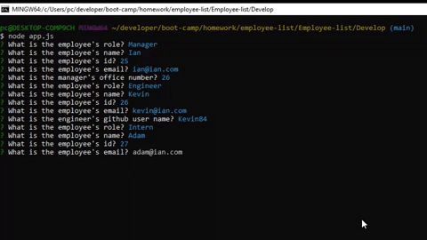

Portfolio
| Project | Example | Description/Github Repo |
|---|---|---|
| What's for dinner? App |  |
The goal of this project was to create an application that will lift some of the burden of deciding what to make for dinner. The "What's for Dinner?" application allows the user to search for online recipes based on ingredients he/she may have on-hand. Additionally, users will have the option to save recipes for future use, which can easily be converted to a PDF to be used offline, or for the more tangible owners of the printer, printed out on paper.
Github: https://github.com/luckyian/whats-for-dinner |
| Workday Scheduler App |  |
In this Workday Scheduler project I added time blocks with a save button to an index.html page, created a javascript file with functions that listen for clicks on save buttons, displays the date at the top of the index.html, uses a 3rd party API to find the current time, and uses that information to color code time blocks on the index.html page.
Any input recieved in the text field is saved to local storage and persists over refresh. Time-blocks change color as the time marches on. Red for current time, green for future, and grey for past.
Github: https://github.com/luckyian/Workday_Scheduler/ |
| Employee List App |  | A command line interface application that takes user input to generate an html template displaying information received from the user. The user is prompted with a selection of different roles for an engineering team, including manager, engineer and intern. The application asks the user for name, id and email. All this infromation is stored and displayed once the user has completed creating their team.
Github: https://github.com/luckyian/Employee-list/ |
| Weather Dashboard App | 
|
This Weather Dashboard is able to take a city via search input and display the current weather data, and five day forecast with data including UV index, humidity, wind speed, temperature and the date of the weather info. Each search is saved as a button on the left side of the screen that will re-search the city on click of the button. All searches are saved in local storage, and the last city searched will populated the fields when the page is refreshed.
Github: https://github.com/luckyian/Weather-Dashboard/ |
| README.md Generator App |

|
This README generator takes user input using inquier and populates that a pre-written README template outlined in the homework. The template creates Description, Installation, Usage, License, Contributing, Tests, and Questions in the Table of Contents, and has direct links to areasin the document that are populated via the generateMarkdown.js. The README file is then generated to the base file structure.
Github: https://github.com/luckyian/Readme-generator |
| Javascript Quiz |

|
In this quiz I used the index.html, style.css, and script.js to create a quiz that asks questions in a multiple choice format, recording a one point score for each correct answer and subtracting five seconds from a 30 second timer for every wrong answer. I used JavaScript functions to: create a listening ability to buttons on the HTML, populate the HTML with questions, verify chosen answers with correct answers, save final score to local storage if the user wishes, if saving the score is chosen it asks for intials and saves those as well. Upon finishing the quiz, the user is taken to the high score HTML page which pulls high scores from the local storage and displays them in order of quiz taken, oldest on top.
Github: https://github.com/luckyian/Quiz/ |